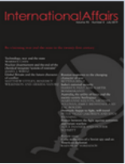

收录于合集
#美国研究 24 个
#中美关系 13 个

作品简介
【作者】 Daniel W. Drezner，塔夫茨大学国际政治学教授，主要研究方向为全球化和贸易、历史和外交、国际交流和公共外交、国际金融和货币政策、国际法和组织、国际政治。
【编译】 王泽尘（国政学人编译员，英国曼彻斯特大学）
【校对】 吴皓玥
【审校】 扎西旺姆
【排版】 高 鹏
【来源】 Daniel W Drezner, Immature leadership: Donald Trump and the American presidency, International Affairs , Volume 96, Issue 2, March 2020, Pages 383–400, https://doi.org/10.1093/ia/iiaa009

期刊介绍

《国际事务》(International Affairs)，是世界领先的国际关系期刊之一，也是少数几本涵盖整个学科的期刊之一。成立时间已超过90年，以学术严谨、注重实践而闻名。近五年影响因子为3.176。
不成熟的领导：唐纳德·特朗普和美国总统职位
Daniel W. Drezner
文章导读
01
前言
自本世纪初以来，学者们一直在寻求将“政客”重新带回到国际关系研究中来。在过去的十年里，关于领导人的个人背景如何影响其外交政策的研究出现了复兴。在这一领域中，主流趋势是通过政客传记中可观察和可验证的方面，来确定这些特征是否对其行为有持续性的影响，如性别、先前的军事经历、掌权的途径。
特朗普的当选推动了这一研究。如此非正统的领导人担任总统，为测试美国政治和外交政策中的各种问题提供了一个自然的实验。一些观察人士遵循了上述趋势，通过参考特朗普的背景来解释他的领导风格。然而，这一标准方法对于研究特朗普总统来说主要面临两点限制。首先，单凭特朗普的背景无法解释他的政治领导风格。即便粗略的审视有关特朗普的文献，也会发现这位总统的一个独特之处：几乎所有为他写传记的人，甚至包括他的助手，都使用了描述小孩子的语言来描述他。特朗普为美国政治史上普遍存在的发展迟缓提供了最好的例子。他的个人心理非常独特，需要研究者对他不成熟的心理特征进行高度集中的分析。
其次，只关注个人因素不足以解释特朗普对美国政治和政策的影响。研究在特朗普登上政治舞台之前，他的心理如何与更大的制度力量相连结同样重要。从理查德•纳伊施塔特(Richard Neustadt)开始，政治学者就一直认为美国总统制从根本上来说是一个脆弱的制度。许多当前的政治学者有充分的理由认为，与前任相比，特朗普是一位软弱的总统。按照传统标准，特朗普的政策成就缺乏持久性的影响。与此同时，另一种声音认为特朗普增大了总统的权力范围，例如，他依靠内阁官员加快退出条约的步伐，还利用紧急状态绕过国会（制定政策）。这场美国政治内部的辩论也影响了关于特朗普对美国外交政策影响的辩论。
通过了解特朗普的心理特征如何与日益增长的总统特权相互作用，可以调和这些对总统权力的不同看法。特朗普作为总统的独特之处在于，他的个人心理会在多大程度上降低他成为一名传统意义上高效总统的能力。这方面的证据大多来自他的支持者，而非批评者。特朗普的员工、下属、内阁官员、国会山的共和党同僚，以及试图讨好这位总统的美国长期条约盟友，都把他描述成一个脾气暴躁的孩子，而不是一个七十多岁的人。急躁的脾气、短暂的注意力和糟糕的冲动控制等心理妨碍了特朗普的政治领导力。
然而，对总统职位的限制在近几十年来已经被严重削弱，即使是一个相对弱势的领导人也能成为一个强有力的总统。特朗普就任时正值总统权力的顶峰，他甚至无视规则以至总统权力进一步增强。半个世纪以来，特朗普的前任们扩大了总统的权力，代价则是与其对立的制度。特朗普自己也企图攫取大量的行政部门权力，但在他就职之前，潜在的趋势就已侵蚀了对总统的正式和非正式的约束。简而言之，特朗普是一个软弱的、但占据着拥有强大职权的人，而这个职位的权力要求人们更多地关注特朗普独特的心理。
02
“孩童般”的领袖
所有美国总统都必须面对反对党描绘的政治讽刺漫画，这些漫画不可避免地突出其最令人诟病的品质。共和党人把奥巴马描绘成一个冷漠、脱离现实的知识分子。民主党人将乔治•布什描述为一个缺乏好奇心的傻瓜，是狡猾政客的傀儡。这两种描绘都有一些真实性。特朗普的漫画有两点引人注目。首先，与前任们不同的是，他被讽刺为“孩童”（toddler）。其次，总统的政治盟友是支持这一类比的主要角色。
特朗普本人、他的下属和支持者谈论“孩童”的频率令人吃惊。总统已经明确表示，他不是最成熟的人。他曾对一位传记作家说：“在我看来，自己在一年级和现在基本上是一样的。脾气并没有那么不同。”大多数其他传记作者也表达了类似的观点：他从年轻时起就很少经历情感或心理上的发展。《特朗普的国度：成为特朗普的艺术》(Trump Nation: the art of being the Donald)的作者蒂姆·奥布莱恩(Tim O’Brien) 在特朗普当选后警告称，“现在将有一个缺乏很多成熟约束和成熟情感的人坐在椭圆办公室里。”
特朗普的下属也做了类似的声明。穆勒报告（Mueller Report）证实，当特朗普的助手因作伪证而受到惩罚时，他们经常把总统描述成一个只有与孩童的情感和智力成熟度相当的人。白宫办公厅主任雷恩斯·普利巴斯(Reince Priebus)对穆勒的调查人员说，当川普对他的国家安全顾问弗林不满时，他会假装弗林不在房间里。克里斯·克里斯蒂 (Chris Christie)、史蒂夫·班农(Steve Bannon) 和白宫法律顾问唐·麦克加恩 (Don McGahn) 都作证称，特朗普提出的要求“无理”、“荒谬”或“愚蠢”。他们都描述了总统在得知坏消息时会大发脾气，特朗普政府的多名官员也在众议院弹劾调查的证词中描述了类似的孩童般的行为。
03
特朗普的心理如何影响他的总统职务
特朗普最突出的三个心理特征严重损害了他的决策能力：易怒、注意力持续时间短和控制冲动能力差。糟糕的脾气使特朗普没能从其他总统中脱颖而出。特朗普的坏脾气导致了糟糕的决策和病态的员工策略。愤怒会导致短期的、冲动的决策，在那一刻良好的感觉，很快就会被灾难性的后果代替。爆发的情绪往往使谈判付出更大代价，增加冲突升级的可能性。这种动态反映在特朗普无法在贸易协定和军备控制条约上获得重大让步这些事上。总统失控的脾气导致工作人员会推迟或缩短了自己和总统的行程以避免激怒他。最令人不安的是，他的脾气明显导致工作人员所选择的提供给他的信息失实，无论这些信息是有关政治分析的、还是有关国家安全的。
总统注意力持续的时间也很短。特朗普的传记作者多次强调他这方面的行为。有人警告说，特朗普“没有足够的注意力”来处理总统日常的工作。另一位说：“他对这些政治问题感到惊讶是因为他不注重细节。特朗普的第一位首席经济顾问加里·科恩(Gary Cohn) 抱怨道：“为总统准备一个有意义的、实质性的简报是没有意义的，因为你有一堆幻灯片。你知道他不会听的，我们永远都无法完成。他在会开讲10分钟后进行别的话题。”
在全球问题上，特朗普同样无法安静地集中精力，这从两个方面损害了美国的地位。首先，注意力持续时间短意味着他可能会错过另一个国家在某个问题上立场的微妙转变。其次，他的不安分常常会导致违反外交礼节，这被视为对其他外国领导人的不尊重。知识匮乏也使得这一问题更加复杂，在其他条件相同的情况下，他的政策简报必须比正常情况下更长，从而导致了总统在获得所有必要信息之前就会走神。此外，官僚机构很容易推迟实施某个想法，以观察总统的注意力是否会转移到其他地方。事实上，特朗普的白宫工作人员已经多次使用拖延战术来回应直接命令。本届政府反复出现的一个主题是，总统希望做点什么，可是员工不作为，接着是一条宣布政策转变的推文，导致员工不知道该如何应对，最后是关于特朗普是否会继续他的路线的不确定性。其结果是一系列的政策声明产生了糟糕的跟进和糟糕的执行。
特朗普的冲动控制能力也很差。传记作家蒂姆·奥布莱恩(Tim O’Brien)指出，特朗普“他不控制自己的情绪，不是一个有纪律的思想者”。事实上，特朗普对自己本能和冲动的信任是如此强烈，以至于深刻地影响了白宫的运作方式。他鄙视任何形式的战略规划。正如一位总统顾问所解释的那样，“他会对于计划的形成感到沮丧。对计划充满敌意，并总想挑起与我们无关的争斗。”从叙利亚撤军、与中国展开贸易战、威胁关闭与墨西哥的边境，特朗普许多高调的决定都有冲动情绪的影响。
冲动控制不力对政治领导层的负面影响是显而易见的。情绪冲动会影响收益分析，这一事实甚至令最成功的总统也感到无力。或许，不冲动行事的最重要原因是此类举措会削弱领导人做出可信承诺的能力。在政治和外交政策中，领导人的承诺至关重要。不同于民间，领导人很少在世界政治中撒谎，因为他们不想在国际谈判中损害自己的声誉。特朗普如此糟糕的冲动控制能力，以至于让外国外交官已经学会了对他的许多威胁视而不见。
04
特朗普是一个软弱的总统吗？
缺乏政治经验、爱发脾气、冲动控制能力差、注意力持续时间短，这些因素综合在一起削弱了特朗普总统职位的建树。这些心理特征有助于解释为什么许多政治学者声称，特朗普的政策成就与过去几任总统相比微不足道。
尽管在特朗普总统任期的头两年里，共和党控制了国会参众两院，但他在这段时间里只通过了一项重要的立法：税收法案。他试图让国会为墨西哥的边境墙提供可观的资金，但失败了。联邦官员通过泄密、拖延、备忘录、异议渠道、检举、官方投诉和国会作证来抵制总统在道德上不可靠的命令。即使在被特朗普政府视为有所作为的政策上，效果也不理想。
在外交事务上，特朗普最大的成功是击败了伊拉克和叙利亚境内的伊斯兰国；但这只是通过延续奥巴马政府制定的战略才得以实现。他将美军陆续撤出叙利亚的努力，遭到了军方的充分反击，军方希望保留部队继续留在叙利亚。一名美国官员将国防部试图说服特朗普在叙利亚保留部分美军的努力比作“喂婴儿吃放在酸奶或苹果酱里的药”。
特朗普未能将美国的影响力转化为贸易协议或军备控制协议中的可观收益。他发起的贸易战给美国造成的经济损失超过了2017年减税所带来的刺激，并导致了2019年的制造业的衰退。特朗普政府的“极限施压”运动没有得到任何让步。在移民问题上的强硬政策并没有阻止中美洲家庭越过南部边境寻求庇护的浪潮。与朝鲜领导人金正恩举行的一系列峰会，是唯一一项具有颠覆性的举措，然而其产生的象征意义却大于安全意义。
特朗普也未能说服美国人民相信其政策的正确性。尽管政府对移民带来威胁的言论越来越强烈，但盖洛普(Gallup)在2018年发现，有75%的美国人认为移民对美国是件好事，这一数字达到了创纪录的水平。第二年，尽管总统发表了保护主义言论，但盖洛普发现，公众对自由贸易的支持率达到了过去25年的最高水平——74%。民调显示，特朗普最令人瞩目的政策举措是不受欢迎的。2018年实施的关税遭到了多数人的反对，大多数人不同意特朗普在推特上宣称的“贸易战是有力的，很容易打赢”。美国有线电视新闻网(CNN)发现，63%的美国人更愿意与盟友保持良好关系，而不是征收关税。近三分之二的美国人(65%)认为世界其他领导人不尊重特朗普。如果纳伊施塔特 (Neustadt) 的观点是正确的，即总统的主要权力是说服的能力，那么唐纳德·特朗普就是一个软弱无能的总统。
随着特朗普任期的推进，一个持续的趋势是社交媒体上越来越少的人畏惧他。2019年3月，《纽约时报》报道称，美国公司已经了解到特朗普的威胁是空洞的，“总统的注意力跨度分散，削弱了他说服商界屈从于他意志的力量……曾经可怕的推特风暴变成了短暂的烦恼。”与此同时，外国外交官对特朗普的威胁性推文也有同样的反应；最好的办法就是忽略它们，因为它们并不重要。
总统糟糕的冲动控制和脾气使他无法令人信服地承诺任何谈判的立场；这反过来又阻碍了他与安格拉•默克尔(Angela Merkel)和塔利班(Taliban)谈判的能力。强制的威胁只有在可信的情况下才有效。除非美国履行承诺，否则解决争端的协议是无法达成的。由于其他人认为特朗普的恒心只不过像孩子一样，于是相应地认为不需要遵从他的指令。
特朗普认知的限制与所有现代美国总统都面临的制度约束交织在一起。各种正式机构、非正式机构、法律和社会规范已经积累起来，成为所有公职人员的桎梏。宪法明确赋予了总统极少的单边权力，并赋予国会和司法部门相当大的权力来阻止总统的越权行为。研究美国政治发展的学者们强调，赞助权 (patronage power) 的侵蚀和公民服务保护的兴起是对总统反复无常的又一制衡。除了宪法和法定的限制之外，大量规范的出现同样限制了总统的权力。长期以来，人们一直期望总统按照不成文的标准和惯例行事。一些政治学家将这些做法描述为“非正式制度”：在法律框架和官方渠道之外创建、沟通和执行的、被社会共享的不成文规则。法律限制、官僚自治和非正式机构的结合，解释了为什么奥巴马在2016年大选结束后马上说：“成为总统你就会发现，所有这些规则、规范和法律都是存在的，你必须注意它们。为你工作的人也要遵守这些规则和规范。”正是由于所有这些约束的累积，才有如此多的政治学者认为，总统制从根本上来说是一个脆弱的制度。
05
二十一世纪的“帝王式”总统
与过去几任总统相比，特朗普的个人心理因素不可否认地阻碍了他实现政策目标的能力。与此同时，他的总统职位也揭示了椭圆办公室的权力本质。在过去一个多世纪里，白宫积累了越来越多的正式和非正式权力，而特朗普正是这些特权的受益者。作为行政部门的领导，总统可以在不咨询政府其他部门的情况下采取多种行动方式。包括行政命令、行政协议、总统公告、总统备忘录、签署的声明和国家安全指令。随着美国历史的发展，总统们越来越多地利用这些形式进行直接行动。
宪法的分权制衡被削弱的另一个原因是政府的其他部门自愿将权力割让给行政部门。这一点在外交关系中表现得最为突出。事实上，这正是阿瑟•施莱辛格(Arthur Schlesinger) 对“帝王式总统”担忧的源头：“面对总统在外交事务上的主动倡议，国会和法院、以及媒体和公民，往往对自己的信息和判断缺乏信心，并且很可能受到行政权力的威胁。”自1942年以来，美国国会从未正式宣战；但是，这并没有阻止总统们从那时起数十次动用军事力量。总统曾依据2001年“9/11”袭击后通过的军事授权（Authorization for Use of Military Force），授权了在索马里、叙利亚和也门的军事行动；而特朗普用它杀了苏莱曼尼。庞大的联盟体系进一步赋予了总统在不咨询国会的情况下部署军队的权力。国会既没有表现出收回这些权力的意愿，也没有这样的能力。同样，在1930年通过灾难性的斯穆特- 霍利关税法（该关税法引发了大萧条）后，国会认定自己无法负责任地履行其在贸易方面的宪法责任。在接下来的数十年里，许多权力被下放给了总统。随着两党分化进一步削弱了国会的权力，政治学者发现，当立法部门因党派分裂而瘫痪时，总统更有能力、也更有可能采取单边行动。
外交政策是其他政府部门权力衰退最严重的领域。特朗普总统利用自己的权力，退出了包括跨太平洋伙伴关系协定 (Trans-Pacific Partnership，简称TPP)、伊朗核协议以及中程核力量条约 (Intermediate Nuclear Forces treaty，即中导条约) 在内的一系列国际条约。在贸易方面，他利用自己的法律特权，对大量的盟友和对手征收高额关税。他的政府禁止来自几个以穆斯林人口为主的国家的公民进入美国，这一行动既没有促进美国的利益，也没有维护美国的价值观。政府也已修改了过多的移民政策，使其更加严格，其影响包括使在美国寻求庇护的移民家庭分离。他还宣布禁止变性人在军队服役。国会无法在这些事件中限制总统，最高法院最终站在了特朗普政府一边。
特朗普在各个层面上都抵制了国会的监督，多次要求行政部门拒绝合法的对于法律文件和证词的要求。作为回应，国会将特朗普告上法庭，但事实证明，司法部门对总统充分利用其权力的约束很弱。早在特朗普出现之前，法院就对行政部门表现出了极大的尊重。在某种程度上，这事关保护法院认知到的权力。法官没有执行能力，只能依靠行政部门。因此，他们不愿调解国会和行政部门之间的争端是可以理解的。此外，即使联邦法院做出了不利于总统的裁决，他们也会尽可能以有限的方式做出判决。其结果是，总统积聚了巨大的权力杠杆，但受到的制衡比美国人通常意识到的还要少。
关于行政部门对总统职位的限制，早在特朗普就职之前，联邦官僚机构的自主权就受到了攻击。从尼克松政府开始，历任总统都学会了如何根据自己的政策偏好来塑造固定的政府机构。尽管2017年有人声称，“房间里的成年人”(adults in the room)将遏制特朗普更反复无常的政策举动，但他的幕僚已不再是限制总统的重要因素。相反，他们是逆向推动者，为特朗普最糟糕的冲动提供理由。随着时间的推移，特朗普的幕僚和支持者微妙地改变了他们对总统的辩护。在他上任的第一年，人们注意到总统是一个从工作中学习的非正统总统，现在他们只是说这是一个非正统的总统。在那篇臭名昭著的、声称成年员工可以约束特朗普的声明出现一年后，这位官员承认：“美国人不应该因为知道房间里是否有所谓的成年人而感到安慰。”人民不是抵御总统的堡垒，不应该期望人民来制约他。
不仅正规的界限被模糊了，非正式的也是如此。旨在监管政治行为的长期规范已经消失。甚至在特朗普之前，不断上升的党派分歧就已经让两党政客可以提高对对方的尖酸刻薄程度。
作为总统，他不受传统规范的约束。上任第一天，特朗普就在中央情报局总部发表了相当于竞选演讲的演讲，这显然违反了外交礼节；上任第一周，在没有征询任何相关内阁部门意见的情况下，通过行政命令将旅行禁令编纂成了法律；用推特解雇自己第一任幕僚长与国务卿；特别值得一提的是，尽管遭到五角大楼官员的反对，特朗普仍多次干预军事司法系统，赦免被定罪的战犯。此外，虽然他让美国退出多项国际协议是完全合法的，但与过去的外交做法有很大出入。
总统制定议程的权力既来自于行政行动，也来自于言辞。特朗普制定政治议程的能力没有减弱。自入职以来，他比任何前任都成功地控制了舆论。他宣称整个主流媒体都是“人民的敌人”，并多次将他的政治对手称为“叛国者”。像“深层政府”(deep state)和“假新闻”(fake news)这样的术语不仅是美国常见的政治用语，更已走向全球。特朗普如此频繁地掩盖各种事情，以至于美国人已经习惯了他的虚假声明。分裂、愤怒、幼稚，这些特朗普言论的本质加剧了美国内部原本就存在的分歧。
在这一领域，特朗普的心理使他比前任们在破坏非正式制度上走的更远。缺乏羞耻感是他的一项政治资产。换句话说，与更成熟的领导人相比，特朗普孩童般的心理特征使他能够以更无拘无束的方式行事。
06
**特朗普的制度遗产
**
在之前的“帝王式”总统执政时期，如内战、水门这样的事件已经激起了恢复国会权力的反弹。事实上，众议院自2018年中期选举以来一直试图加强监管，而特朗普的继任者可能会试图恢复限制。
这种观点低估了特朗普任期内可能对美国造成的持续性的伤害。首先，特朗普为自己的越轨行为只付出了很小的政治代价，因为他保有共和党人的全力支持。在一个两极分化的时代，特朗普的不成熟几乎没有影响到他在党内的地位。事实上，他的脾气暴躁和不受约束的冲动现在被共和党人接受为“非正统”。他在共和党选民中的支持率一直接近90%。2019年3月的一项调查显示，78%的福克斯新闻(Fox News)观众认为特朗普是美国历史上最成功的总统。只要他还是总统，共和党就是特朗普的。尽管特朗普遭到了弹劾，但众议院的党派方向投票将使他能够继续不受约束地行动，同时不用担心遭到政治报复。
另一个对美国的持续伤害将会出现在外交方面。总统将仅通过行政行动推进越来越多的政策。总统可以撤销或废除已有的行政协议。政党的两极分化削弱了政治家需要在“中间”执政的观念。从美国政治光谱的两个极端中交替出现的总统们，将更有动力改变其前任的政策。老旧的规范和从政党中脱颖而出的极端总统的组合，可能会使美国外交政策在极端保守主义和极端自由主义之间摇摆不定。在这种政治气候下，美国承诺的可信度不再重要。可持续的大战略变得不可能。
特朗普的总统任期有助于解释美国政治学者关于总统相对权力的辩论。他无法通过传统手段完成大量的事务，这支持了诺伊施塔特的观点，即总统制是一个主要依赖于说服的脆弱制度。另一方面，特朗普在外交政策上使性子、抢夺权力、摧毁政府机构、破坏政治规范、恐吓共和党建制派，这些都展现了现代总统权力的可怕范围。
本文由国政学人独家编译推荐，文章观点不代表本平台观点，转载请联系授权。


好好学习，天天“在看”
国政学人
支持学术公益与知识传播
微信扫一扫赞赏作者 __赞赏
已喜欢，对作者说句悄悄话
取消 __
发送给作者
发送
最多40字，当前共字
上一页 1/3 下一页
长按二维码向我转账
支持学术公益与知识传播
受苹果公司新规定影响，微信 iOS 版的赞赏功能被关闭，可通过二维码转账支持公众号。